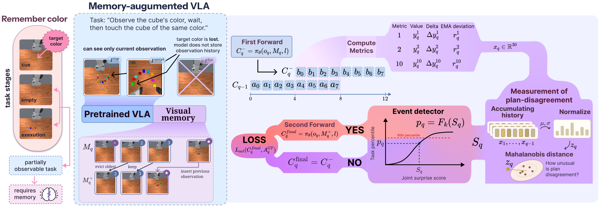

Paper Analysis
01 · Why a Policy Needs Selective History
部分可观测任务中，同一当前画面可能对应不同正确动作，因为决定动作的线索已经离开视野。论文采用的 delayed-cue 任务先展示目标颜色，经过空白阶段后再要求选择目标。存下历史可以解决信息缺失，但持续写入所有相机画面会让上下文增长，有限 FIFO 又会把较早的重要线索挤出去。
这里的 memory 是最多 B 张历史图像，作为额外视觉输入与当前顶部、腕部相机一起交给 VLA；它不是语言摘要、物体图谱，也不是压缩 KV。每个 episode 从空状态开始，不跨任务回合继承图像。
方法要回答两个不同问题：何时值得重新考虑记忆，以及当时的候选中哪些画面尚未保存。前者使用策略预测变化，后者使用视觉聚类。高变化只提供候选事件，不直接证明发生了有价值的语义变化。
Paper Analysis
02 · Following the Original Pipeline

Victoria Smelova et al. · Original figure, unmodified · CC BY 4.0 · Paper & Caption ↗
Figure 4 中，第一次前向用当前观测 o_q、原记忆 M_q 和指令生成写入前动作块 C_q^-。把它与上一次最终执行所依据的动作块对齐，提取变化特征；统计模块把这些特征转换为任务内异常程度，再决定是否检查候选帧。
原图的 FIFO 展示直接写入上一帧的基础形式。正文完整去重版本会联合当前 FIFO 和事件前的三张观测做聚类，挑出此前没有保存过的视觉状态。事件可以导致零次、一次或多次写入；图中的 YES 应结合 Algorithm 1 理解为实际有新条目加入时才走第二次推理。
第二次前向仍然是同一个策略，但读入更新后的图像集合。它生成最终动作块，只执行前 H 个动作，然后接收下一次观测。若没有实际写入，推理时直接使用第一次结果。因此存在额外推理开销，但不是每个查询都固定运行两次。
Paper Analysis
03 · Comparing Predictions for the Same Future
动作分块模型每次预测 K 个控制量，只执行 H<K 个后重新规划。两次预测重叠的 K−H 个位置指向相同的未来时刻，因而可以比较“新观测到来前后，对同一行动的判断是否改变”。论文在预训练 VLA 实验中使用 K=8，H=1 或 4。
教学例子：上次预测对应绝对时刻 0–7 的八个动作，执行 0–3 后新预测对应 4–11。应比较旧块第 4–7 项与新块第 0–3 项；直接把两个八项数组逐元素相减会把不同时间的正常动作变化也算进来。这个时间对齐是方法成立的基础。
最终检测向量包含九个动作变化量与一个顶部视图特征距离，再追加它们的一阶变化和相对历史 EMA 的偏差，形成 30 维输入。相关性很强的距离指标不能简单重复计票，因此后续用带正则的 Mahalanobis 距离处理特征相关性。
需注意附录的细节：Causal Z-score、CUSUM 和 EMA deviation 使用连续查询的 first-action change s_q=||a_(q−1,0)−a_(q,0)||，并不全是 Eq.1 的严格重叠误差。检测器还含视觉变化特征，所以整体结果不能归因于单一的“同一未来动作修正”信号。
U_q = C_(q-1)^final[H:K] V_q = C_q^-[0:K-H] x_q = concat(y_q, y_q - y_(q-1), y_q - EMA_(q-1)) D = 10; dimension(x_q) = 30
Paper Analysis
04 · Calibration and Redundancy-Aware Writes
每个任务分别保存特征均值、方差、二阶矩和 surprise 的经验累积分布。当前样本先用此前统计量打分，再参与统计更新，避免把当前异常提前吸收到基线中。训练前 5–10% 暂停写入以积累统计；完成训练后冻结统计用于推理。
S_q 是标准化特征的联合异常距离，p_q=F_k(S_q) 是任务 k 内的历史分位数。阈值 0.99 表示超过参考分布的 99%，并不表示该帧以 99% 概率有用，也不保证未来每段视频恰好写入 1% 的帧。任务分布改变时仍需要重新校准。
事件触发后，把前三个观测与已有记忆共同进行 complete-link 聚类，阈值 δ=0.01。仅对不含已有记忆帧的簇选择最新候选，按时间顺序写入 FIFO；超容量时淘汰最早条目。complete-link 的含义是限制簇内最远成员之间的距离，而非仅要求靠近某个中心。
机器人运动可能让相同环境画面被当成不同状态。作者因此仅在相似性比较中遮掉机器人，实际存储和策略输入仍用原 RGB。该设计减少由机械臂姿态引起的重复写入，却也依赖可靠掩码。正文没有完整明确聚类距离的特征定义与全部配置，δ 不能脱离这些细节直接复用。
候选窗不含当前帧，而是回看事件前的三个观测。这有利于抓住刚刚消失的线索，但当前帧本来就是因果可用的；不存它是选择策略，不是严格因果推理的必要条件。项目页示例显示三个槽位，但不能把这个展示当作所有实验的完整容量配置。
z_q = (x_q - mu_(q-1,k)) / (sigma_(q-1,k) + epsilon)
S_q = sqrt(z_q^T (Sigma_(q-1,k) + lambda I)^(-1) z_q)
p_q = F_k(S_q); event_q = [p_q > tau]
R_q = novel representatives from {M_q, I_(q-3), I_(q-2), I_(q-1)}
M_q^+ = FIFOAppend(M_q, R_q)Paper Analysis
05 · Training Signals and Gradient Boundaries
策略仍用各自标准动作监督训练：专家动作监督最终动作块，不用于在线选择哪张图应写入。计划、视觉特征送入检测模块前均 stop-gradient，统计更新、阈值和聚类也不反传。动作损失训练的是“使用所选记忆的策略”，不是通过可微写入奖励直接学习选择器。
分布式训练中，预写入前向只作推理，然后对完整 micro-batch 再执行一次可微最终前向；没有写入的样本使用原记忆。这样不同设备上的事件数量不同，也不改变同步计算图。部署时则只在实际写入后增加一次前向，训练与推理的调用成本不能混写。
论文中还存在另一套实验检测器：RQ2 的 XGBoost、CatBoost、LSTM 用模拟器阶段切换标签训练，并按验证集 F1 选阈值；主方法的 Mahalanobis 分位数触发器不等于这三个监督分类器。RQ2 的高 AUC 证明这些特征具有可分性，不能直接作为主方法统计阈值的 AUC。
附录说明单任务 Flow-Matching 策略评估时，一个回合内复用固定噪声，防止采样随机性产生虚假计划差异。这类控制对复现很关键；否则所谓 surprise 可能只是两次采样的随机差异。
L_SFT(theta) = sum_q L_action(C_q^final, A_q^expert) Gradient: final policy invocation -> policy parameters No gradient: detector features / statistics / threshold / frame selection
Paper Analysis
06 · What the Experiments Actually Establish
RQ1 在八个任务上筛选 35 个指标，每个单任务策略用 250 条示范、150 个 epoch 训练，再各测 50 个闭环回合。不同任务的效果差距显著，例如 ShellGameShuffleColorLampTouch 的最优 AUC 约 0.58–0.62，不能把后续预训练 VLA 的汇总高分扩展到所有任务。
RQ2 对两种 VLA、两种执行步长和 19 个任务收集轨迹，每个组合每个任务 50 个回合，按回合约 70/10/20 分训练、验证、测试。下表展示监督检测器的代表结果；ROC-AUC 与 PR-AUC 越高越好。event_recall@1=1.0 表示阶段边界前后一步内找到事件，不意味着精准命中唯一最优存储帧。
RQ3 暴露了“检测到变化”与“保存正确图像”的间隙：直接写前一帧时，95% 分位阈值下 π0.5 线索写入不到 20%，OpenVLA-OFT 为零；降到 80% 后分别为 48% 和 85%。阈值更严不一定提高记忆效用，因为它可能错过短暂线索。
加入聚类后，OpenVLA-OFT 在 50 个回合中线索写入和保留均达到 100%。进一步加机器人掩码，累计写入从 336 降到 169，FIFO 淘汰从 186 降到 19，保留仍为 50/50。因此掩码的直接证据是减少重复写入，而非在这批样本上提高已经满分的保留率。
实机部分使用录制轨迹离线 replay，展示事件触发与去重行为。论文没有给出足以证明这一模块提高实机闭环任务成功率的对照；小样本线索保留率也不是跨任务可靠性保证。
| Policy / Regime | Detector | PR-AUC ↑ | ROC-AUC ↑ |
|---|---|---|---|
| OpenVLA-OFT / H=1 | LSTM | 0.962 | 0.989 |
| OpenVLA-OFT / H=4 | XGBoost | 0.996 | 0.997 |
| pi0.5 / H=1 | LSTM | 0.933 | 0.985 |
| pi0.5 / H=4 | LSTM | 0.983 | 0.988 |
Paper Analysis
07 · Implications for Streaming Reconstruction
与 S2Tok 的可学习 admission 相比，这里先用行为变化触发，再由去重规则决定具体内容，选择器不接受下游梯度。与 RecallGS 的历史检索相比，它关心观测最初是否写入，而非读取时从历史中找谁。这三篇分别强调写入信号、状态扩展和证据读取。
对 LingBot-Map，可以借鉴的是“新观测是否明显改变对已有区域的判断”，而不是直接搬用动作块距离。一个待检验方案是在几何对齐与可见性可靠的重叠区域比较更新前后的深度、法向或语义预测，再把变化与观测可靠性共同用于候选选择。没有对齐时，视角变化本身就能制造高差异。
这不是已经证实的改进，也不等于语义写入前融合。前者改变何时保存，后者改变保存的表示；应分别对照相同容量下的几何效果、历史保留和额外推理次数。若变化来自误预测或漂移，反而可能把噪声优先存入记忆。
截至阅读日，作者项目页提供论文、视频与交互 replay，未提供可核验的完整训练实现链接。因此当前梯度解释依据正文和 Algorithm 1，没有声称代码复现通过。
Discussion
Reading Questions
Does 100% retention mean 100% task success?
不是。它指指定 50 个回合中线索保留到后续动作阶段；操作成功还取决于策略如何使用线索。
Does the write gate learn through the action loss?
没有。检测特征、统计量和离散选择均停止梯度，动作 loss 只更新最终策略调用。
Why compare overlapping actions?
只有预测针对相同未来时间，差异才较接近判断修正；否则会混入正常时间推进。完整检测器还含其他时间信号与视觉变化。
Can it be copied directly into LingBot-Map?
不能。重建没有同样的动作块，应先构造空间对齐、可见性受控的预测修正指标，再独立验证其保存价值。
References
Original paper figure reproduced without modification under CC BY 4.0. Paper and official materials checked on October 28, 2026. Reported experiments were not independently reproduced.
Verified on 2026-10-28. Paper results refer to the linked versions. Repository references were checked on this date.